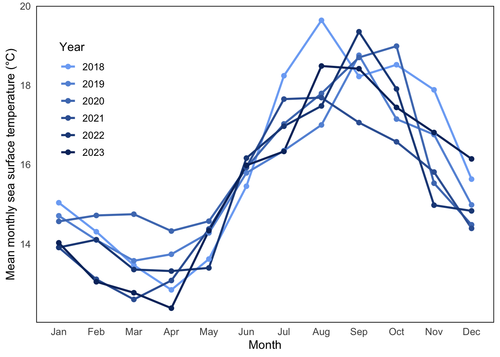
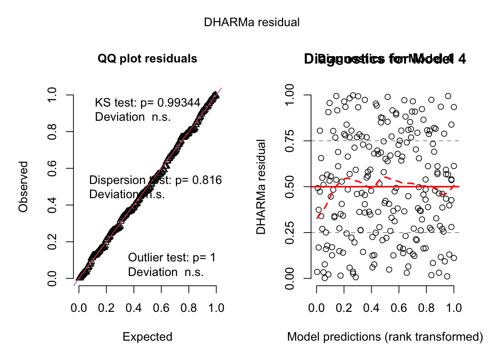
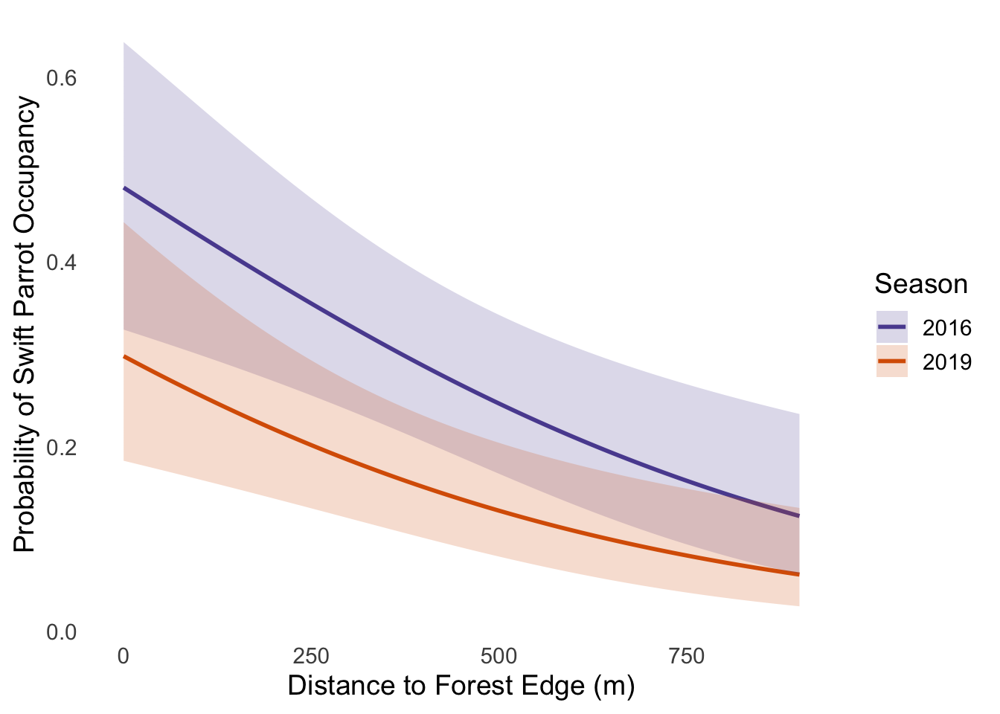

Attaching package: 'janitor'
The following objects are masked from 'package:stats':
chisq.test, fisher.test
library(ggplot2)library(readxl)library(ggpubr)
Registered S3 methods overwritten by 'broom':
method from
nobs.fitdistr MuMIn
nobs.multinom MuMIn
library(dplyr)sst <-read_csv("data/SST_update2023.csv") #read in problem 2 data
Rows: 291384 Columns: 5
── Column specification ────────────────────────────────────────────────────────
Delimiter: ","
chr (1): site
dbl (3): latitude, longitude, temp
date (1): date
ℹ Use `spec()` to retrieve the full column specification for this data.
ℹ Specify the column types or set `show_col_types = FALSE` to quiet this message.
data <-read_csv("data/occdist.csv") #read in problem 3 data
Rows: 227 Columns: 10
── Column specification ────────────────────────────────────────────────────────
Delimiter: ","
chr (4): box, box occupant, eventID, repeated use
dbl (6): edge distance, season, sp, cs, e, tm
ℹ Use `spec()` to retrieve the full column specification for this data.
ℹ Specify the column types or set `show_col_types = FALSE` to quiet this message.
Problem 1
a)
In part 1, the co-worker likely used a correlation analysis or a linear regression . The reported p-value of 0.03 suggests they were testing whether the slope of the relationship between the two variables is significantly different from zero.
In part 2, the co-worker might have used a one-way ANOVA (Analysis of Variance). The p-value of 0.02 suggests that at least one group has a significantly different mean nitrogen load compared to the others.
b)
A post-hoc test like Tukey’s Honest Significant Difference (HSD) could be performed to determine which specific nitrogen sources differ significantly from each other. Tukey’s HSD would allow you to tell whether fertilizer sources have significantly higher nitrogen loads than atmospheric deposition or grasslands, which is crucial for making management recommendations.
Including a table or summary statistic that reports the mean nitrogen load and standard deviation for each source would help someone understand the variability of nitrogen contributions from each source. Providing descriptive statistics gives context to the ANOVA results and helps audiences grasp which sources are contributing the most nitrogen on average and know that there is more than just a difference.
c)
As th distance from the headwater increases, there is a statistically significant corelation with the annual total nitrogen load (kg year-1), which suggests a possible pattern in water contamination like nutritional build up or runoff. (Statistical test: Pearson correlation; r = [correlation coefficient], p = 0.03, α = 0.05)
Through our tests we observed a significant variation in average nitrogen load across different sources, meaning that some sources may contribute more to nutritional pollution and contamination than others. (Statistical test: ANOVA; F = (F stat), df = (deg freedom), p = 0.02, α = 0.05)
Problem 2
a)
#cleaning datasst_clean <- sst|>select(date, temp) |>#get rid of long and latmutate(year =year(date), #extract yearmonth =month(date, label =TRUE) #extract month ) |>group_by(year, month) |>#group by year and monthsummarise(mean_monthly_sst =mean(temp, na.rm =TRUE)) |>#calculate monthly sstmutate(year =as.factor(year),month =factor(month, levels = month.abb, ordered =TRUE) #order months in correct order ) |>ungroup()
`summarise()` has grouped output by 'year'. You can override using the
`.groups` argument.
sst_clean |>slice_sample(n =5) #showing 5 random rows of cleaned data
# A tibble: 5 × 3
year month mean_monthly_sst
<fct> <ord> <dbl>
1 2006 Nov 16.2
2 1990 May 14.2
3 1991 Oct 16.9
4 2015 Feb 16.1
5 1997 May 14.9
sst_subset <- sst_clean %>%#use clean datafilter(year %in%c("2018", "2019", "2020", "2021", "2022", "2023")) #only want 2018-2023#creating plotggplot(data = sst_subset, aes(x = month, y = mean_monthly_sst, group = year, color = year)) +geom_line(linewidth =1) +#size of connecting linesgeom_point(size =2) +#size of dotsscale_color_manual(values =colorRampPalette(c("#7cadf5", "#08306b"))(6) #blue gradient ) +labs(x ="Month", #x axis titley ="Mean monthly sea surface temperature (°C)", #y axis titlecolor ="Year"#legend title ) +theme_minimal(base_size =12) +theme(legend.position =c(0.1, 0.7), #legend on the top leftlegend.background =element_rect(fill ="white", color ="white"), #no border on table of contentspanel.border =element_rect(color ="black", fill =NA), #outline of box in graphpanel.background =element_rect(fill ="white"), #background color is whitepanel.grid.major =element_blank(), #remove grid linespanel.grid.minor =element_blank(), #remove grid linesaxis.title =element_text(size =12), #size of axis titleaxis.text =element_text(size =10), #size of axis textlegend.title =element_text(size =12), #size of legend titlelegend.text =element_text(size =10) #size of legend text internal )
Warning: A numeric `legend.position` argument in `theme()` was deprecated in ggplot2
3.5.0.
ℹ Please use the `legend.position.inside` argument of `theme()` instead.

Problem 3
a)
Biologically the 1’s and 0’s in this data set represent what bird, if any, is in the nest box during the given breeding season. Depending on which column you look at 1 means there is a Swift Parrot, Tree Martin, Common Starling, or no bird.
b)
Swift Parrots are a critically endangered species while tree Martins and Common Starlings are more common and considered competition for different recources.
c)
The ‘seasons’ they are talking about are the 2016 and 2019 summer breeding seasons when parrots bred at the study area. These seasons differ because a lot can change in 3 years, such as, average global temperature, management practices, weather patterns, populations of different supporting or threatening species, and increased or decreased compettition if other populations change over the years.
d. Table of Models
Model #
Season Included
Distance from Edge Included
Model Description
1
No
No
Null model
2
Yes
Yes
Saturated model
3
Yes
No
Season model
4
No
Yes
Distance model
e)
data <- data %>%rename(edge_distance =`edge distance`) %>%mutate(season =as.factor(season)) #cleaning datamodel1 <-glm(sp ~1, data = data, family ="binomial") #intercept only null modelmodel2 <-glm(sp ~ season + edge_distance, data = data, family ="binomial") #sason and edge saturated modelmodel3 <-glm(sp ~ season, data = data, family ="binomial") #season onlymodel4 <-glm(sp ~ edge_distance, data = data, family ="binomial") # distance only
f)
simulation1 <-simulateResiduals(model1)plot(simulation1, main ="Diagnostics for Model 1") #Model 1 diagnostics
simulation3 <-simulateResiduals(model3)plot(simulation3, main ="Diagnostics for Model 3") #Model 3 diagnostics
simulation4 <-simulateResiduals(model4)plot(simulation4, main ="Diagnostics for Model 4", quantreg =FALSE) #Model 4 diagnostics

simulation2 <-simulateResiduals(model2)plot(simulation2, main ="Diagnostics for Model 2") #Model 2 diagnostics
The best model as determined by Akaike’s Information Criterion (AIC) was model2. This model had the lowest AICc value (226.3), meaning it has the balance of goodness-of-fit and model simplicity compared to the other models.
h)
new_data <-expand.grid(edge_distance =seq(0, 900, by =10),season =factor(c(2016, 2019), levels =levels(data$season)) #new dataframe for edge distances during both seasons)preds <-predict(model2, newdata = new_data, type ="link", se.fit =TRUE) #Get predicted probabilities and confidence intervalsnew_data$fit <- preds$fitnew_data$se <- preds$se.fitnew_data <- new_data %>%mutate(prob =plogis(fit),lower =plogis(fit -1.96* se),upper =plogis(fit +1.96* se)) #Convert from logit to probability scaleggplot(new_data, aes(x = edge_distance, y = prob, color =factor(season))) +geom_line(linewidth =1) +geom_ribbon(aes(ymin = lower, ymax = upper, fill =factor(season)), alpha =0.2, color =NA) +labs(x ="Distance to Forest Edge (m)", #x axis titley ="Probability of Swift Parrot Occupancy", #y axis titlecolor ="Season", fill ="Season"#legend title ) +scale_color_manual(values =c("#5b4d9f", "#d95f02")) +scale_fill_manual(values =c("#5b4d9f", "#d95f02")) +theme_minimal(base_size =14) +theme(panel.grid =element_blank())

i)
Figure 1. Predicted Probability of Swift Parrot Nest Box Occupancy by Distance to Forest Edge
This figure shows the predicition of probability of the Swift Parrot occupancy in nest boxes in corelation to its distance to the forrest’s edge during the breeding season 2016 (purple) and 2019 (pink). The sahded regions represent 95% confidence intervals and the lines represent the predicted trend. These values are predicted based on logistic regression model with both season and edge distance as predictors. Data source: Stojanovic et al. (2021). Dryad. https://doi.org/10.5061/dryad.83bk3j9sb
The probability predicted for the Swift Parrot nest box occupancy is higher when the distance to forest edge was (0m) compared to (900m) in both seasons. It was found that in 2016, the probability at 0m was 48% while in 2019 it was 30% and as we move to the 900m mark those percents drop to 12% and 6%. In Figure1, the negative relationship between distance and occupancy probibility is shown when both lines have a clear downward trend. THis pattern is most likely due to the Swift Parrots’ habitual preference for food availability, and or animal communities found at the 0m mark which may change or diminish as you move to larger distances.
Problem 4
a)
The Homework 3 graph is an effective bar chart, using color and categorical grouping (sleep and protein levels) to emphasize mood differences. It also compares multiple variables at one time to find the optimal mix. The Homework 2 visualizations are more straightforward: There is a Q-Q plot with confidence intervals, used to check normality, a box plot showing distributions and outliers of PM2.5 levels by location, and a time series line plot comparing PM2.5 levels over time across multiple locations. These graphs focus on data exploration and distribution rather than emotional storytelling.
All the graphs in Homework 2 and 3 have a clean look to them, including an axis title to help the view interpret the trends and differences. Each plot involves comparisons from 2 or more categories whether that be location or conditions. They also use individual data points to show the variability.
In the Homework 3 graph, we can see a pattern of a higher mood score when more protein is consumed and more sleep is had, showing a pattern of better well being with these factors. In the Homework 2 visuals, the Q-Q plot shows deviation from the normal in the tails, most likely due to PM2.5 outliers. The box plot shows a higher median and more extreme outliers, and the line plot shows higher PM2.5 levels over time, especially in the start of December. We can see these differences arise because the Homework 3 graph is emphasizing categorical interactions while the Homework 2 graphs are exploring distribution and variation in environmental trends.
Some Feedback I got in week 9 was to make sure my visuals are clear and readable, and tell the story I am trying to tell. I implemented this in my Homework 3 graph by pairing a bar chart and a scatter plot, so you can see 2 things at once without getting confused at what is happening. I was also told to be careful with my placement of things like the legend and titles so that they don’t overlap. I implemented this in my Homework 3 as well, making sure my visual was perfect and professional before turning it in.